Lead UX Designer
Vicky Kingrani
I lead design for regulated, expert-user enterprise software — the kind that runs trading floors, hospitals, and pharmaceutical supply chains.
Thirteen years pulling apart dense, high-stakes workflows and rebuilding them around how expert users actually work. In market risk, clinical operations, supply-chain compliance, and cybersecurity tooling deployed across hundreds of schools, a confusing screen is rarely just inconvenient. It's a control gap, an audit finding, a stockout, or a breach. I've shaped UX strategy across consulting, agency, and in-house roles — as a hands-on designer and as a mentor — building team practices and design systems the rest of the team kept using after I moved on.
From agency generalist in Pune to sole UX for a Swiss investment bank's risk platform
Agency generalist to UX practitioner. Individual contributor to manager of twelve. Back to sole designer when the work needed depth over breadth. None of these moves were accidental, but the line between them is anything but tidy.
The shape is intentional. Years building team practices in agency and consultancy taught me what a design organisation needs. The current solo role is where I've gone deepest — sole designer accountable for a regulated platform under FRTB and Basel III, applying a global design system across four interlocking products.
Seven case studies across finance, healthcare, pharmaceutical supply chain, telecom, and cybersecurity.
Most of the work here is in regulated, expert-user enterprise software — the kind of product that doesn't get redesigned often, and matters when it does. A few of the cases are deep dives across multiple slides; others are single-slide features focused on the design decisions that mattered most.
Modernising a 10-year-old risk analytics platform
A Swiss investment bank had a legacy desktop application that senior risk analysts were supposed to use daily for FRTB, VaR, and IMA DRC ETL calculations. Many were defaulting to Excel for parts of the workflow. The brief was to understand why and redesign the platform around how analysts actually work.
What follows is the analysis surface — one slice of a much larger market-risk platform. As the sole designer for market risk, I lead design across four interlocking products: the analysis tool shown here, plus reporting, methodology, and compliance surfaces.
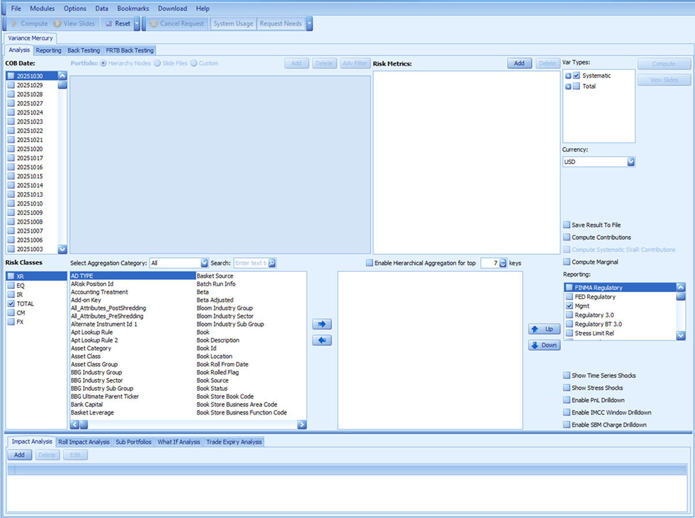
Surveying the damage
To validate assumptions before observation, I deployed a system-wide usability survey across the user base, ran eleven structured one-on-one interviews with senior analysts, and mapped the findings to Nielsen's heuristics to diagnose root causes. The quantitative data painted a stark picture of a platform failing its core users on both usability and reliability.
Top survey complaints, in the analysts' own words
"Doesn't work in the afternoon… some runs take a minute, the same run later just crashes."
"There are too many buttons and options for a new user. There is a lot of hidden functionality."
"It takes time to run the tool. After waiting for an hour, if it only gives me error messages, I feel like I am losing my work."
Three patterns from contextual research with senior analysts
Three weeks observing analysts during their end-of-day risk runs, supplemented by the eleven structured interviews. Three patterns surfaced consistently — each pinpointing where the survey complaints actually came from.
Selecting a portfolio meant losing visibility of what was already configured. Analysts opened and closed the modal repeatedly to verify their selections before running a single compute.
Selecting the right combination required institutional memory. New joiners could not operate the tool independently without a senior analyst alongside them.
As a result, the bookmarking feature was largely unused. Analysts re-entered their parameters daily.
Every analyst, without exception, was exporting to Excel for the analysis the platform should have been supporting. The tool wasn't extending the workflow — it was the bottleneck the workflow had to route around.
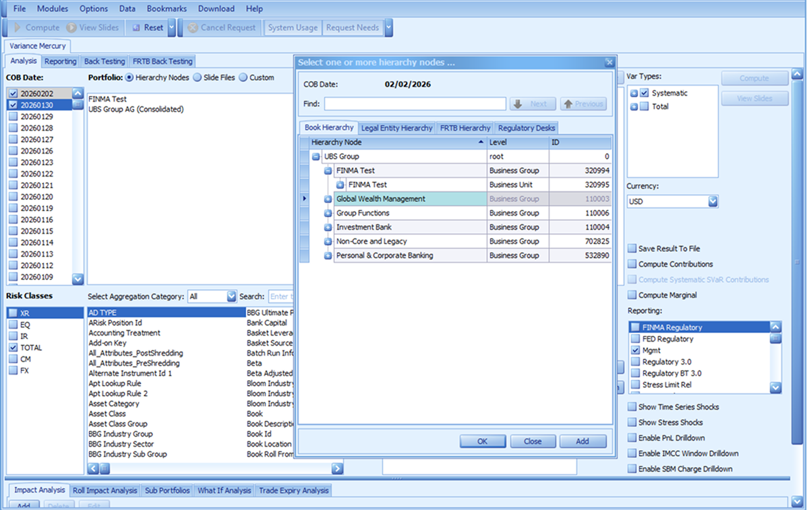
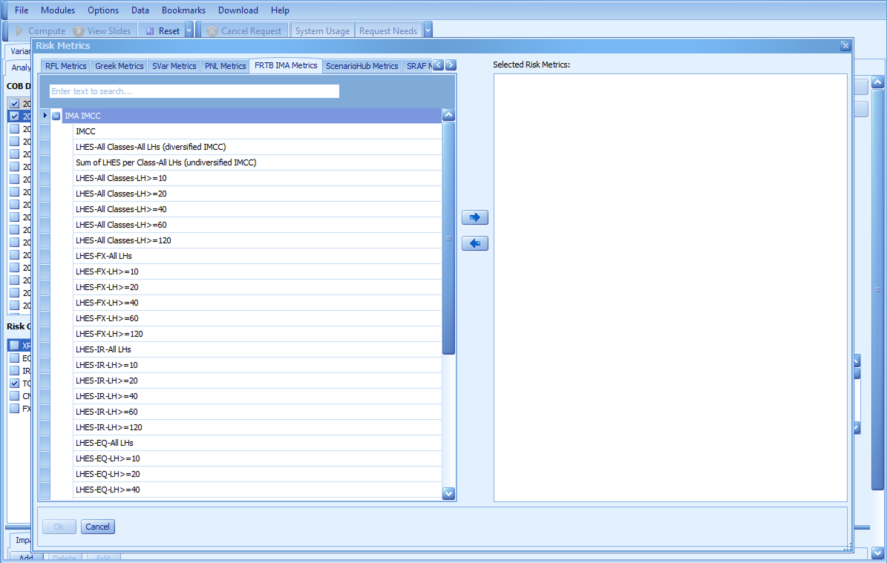
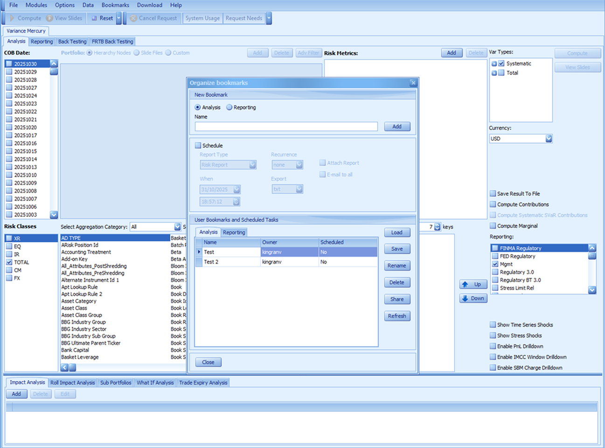
Mapping the noise to root causes
With survey, interviews, and contextual observations gathered, I synthesised against Nielsen's heuristics — separating symptoms (slowness, confusion, lost bookmarks) from root causes. Five violations surfaced on the legacy interface; three behavioural patterns appeared in every analyst we observed.
Heuristic evaluation — five violations, ranked by severity
"Progress bar would jump and wasn't trusted… give more indication of progress."
"Error messages were meaningless to everyone."
"Interface is overloaded. Too many buttons and options for a new user."
"Bookmarks are difficult to use… very easy to overwrite a current bookmark by error."
"Inconsistency between names of aggregation keys and adjacent risk systems."
Patterns universal across every user we spoke with
Every analyst exported to Excel for filtering, pivoting, and comparison. The tool gathered the data; Excel did the work.
To run two queries side-by-side, analysts opened the entire app multiple times. The interface assumed serial work; the actual job was parallel.
New joiners learned the tool from seniors; documentation was years out of date and the app offered no in-product guidance.
From research insight to design strategy
Three things needed to land before the redesign could begin: who the system was actually serving, which competing stakeholders had to be aligned, and what design principles would guide every decision that followed.
Two users, one static screen
The contextual research surfaced a fundamental clash. The legacy interface was forcing two entirely different personas onto the exact same static form.
Needed five inputs to run a standard overnight VaR report. Configuration was largely the same most days; the rest of the form was noise.
Needed 50+ inputs to run deep, exploratory "What-If" stress scenarios. Required unfiltered access to the full parameter space.
It's a generic solution with everything in one application. If you split it into 4+ different applications — analytics, reporting, etc. — that delivered exactly what the user wanted.Senior risk analyst — survey response
The respondent had articulated the architecture before I designed it. The strategy followed from there: don't delete complex features, make the system respond to user context — and split it where the work actually splits.
Three principles for what came next
Static forms become responsive. The UI updates fields, components, and portfolios based on the metric selected — masking different backend calculators.
Hide advanced parameters by default. Smart chips and accordions reveal only what is relevant to the analyst's current task.
Eliminate offline file sharing. Analysts save, manage, and share query bookmarks securely within the platform itself.
Redesigning around uninterrupted flow
The redesign replaced modal handoffs with full-screen pickers and persistent chips. The picker is no longer in the way of the analysis — selections sit on the main view, removable in one click.
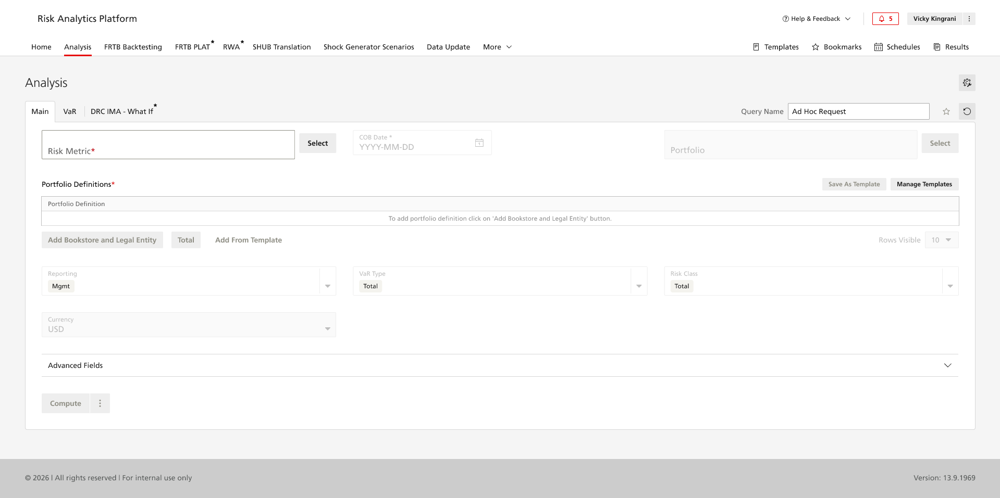
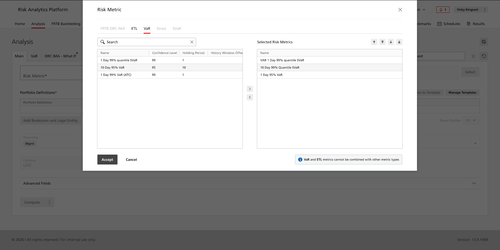
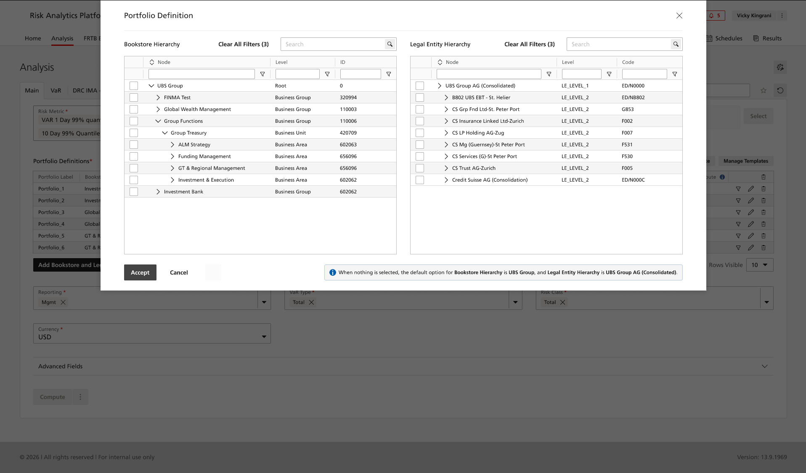
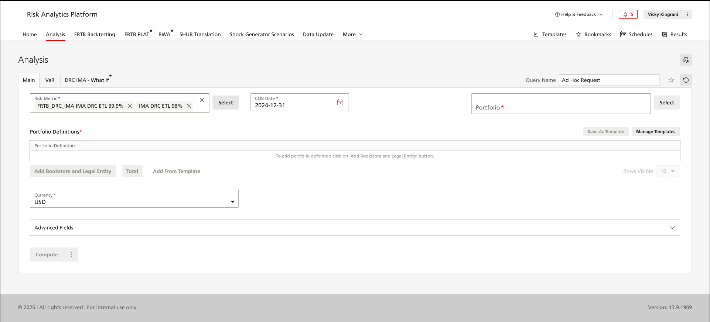
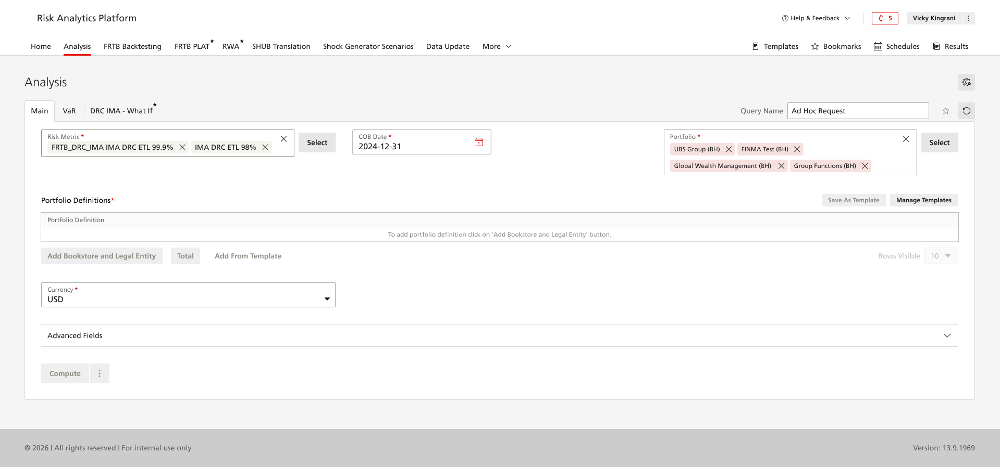
An interface that adapts to scenario and to user
Risk analytics workflows vary enormously by scenario. FRTB calculations, VaR scenarios, and stress testing each need different inputs, and on the backend they run through different calculators. The frontend's job was to handle that without forcing the analyst to think about it.
The Analysis page now opens with VaR Type, Risk Class, Currency, and Reporting prepopulated to the analyst's last-used values. Returning users configure only what has changed; new joiners get a sensible starting point.
When VaR, SVaR, or stress metrics are selected, a different Portfolio Definition component is enabled — reflecting the calculator running on the backend. The user-facing surface stays consistent; the underlying logic switches transparently.
Save Bookmark sits adjacent to Compute. Bookmarks open in the same surface, not in a separate dialog — supporting the configure-once, run-daily workflow analysts had been recreating in Excel.
A per-tab settings panel lets analysts hide controls they don't use — keeping advanced fields available for power users without cluttering the default view for occasional ones.
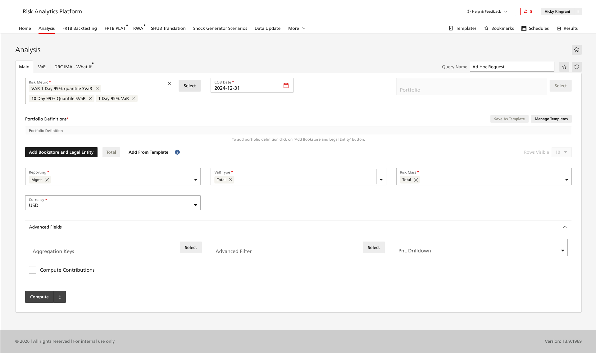
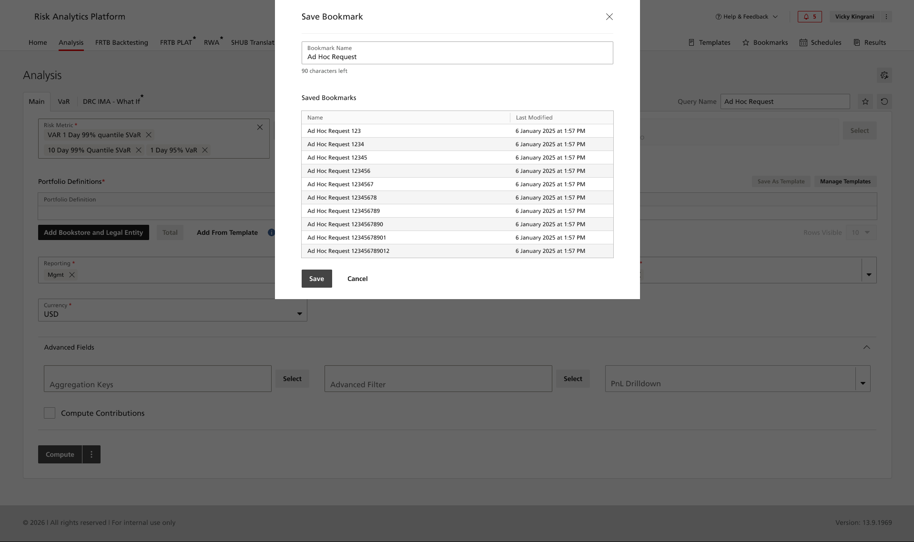
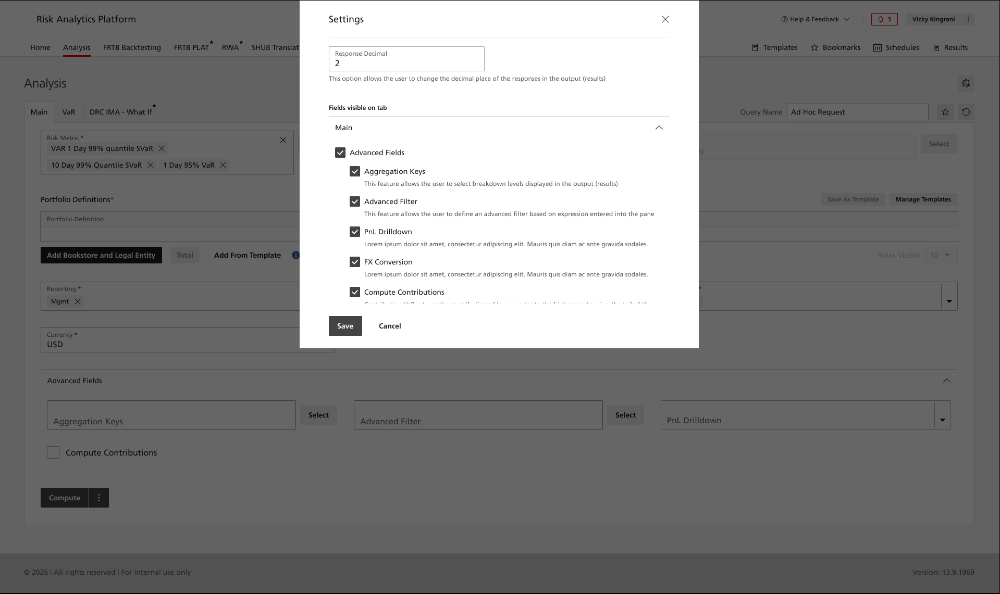
Efficiency restored
The static form became responsive to scenario. Offline bookmark-sharing moved in-product. A standardised component library carried both the redesign and the adjacent products that followed. Senior analysts came back to the platform, and the compliance gap that Excel had been opening started to close.
Before development, the redesigned flow was prototyped in Figma and validated with five senior analysts. Drill-down setup completion lifted 40% in those sessions, and components were handed to engineering with documented states and interaction specs to keep QA cycles short.
The platform is in active use and the engagement has since expanded into the three adjacent market-risk products. The bank's global design system was applied here first; it is now the consistency layer that lets one designer maintain the visual and interaction grammar across the full domain.
Replacing a legacy CRM-based ticketing system handling 467,000 tickets a year
A major global telecommunications operator's Global Operations Centres in Mumbai, Manila, and Denver were managing service delivery tickets through a legacy desktop CRM platform. The platform processed 467,654 trouble, change, and maintenance tickets annually. Engineers had no orchestration tools, no way to prioritise across the queue, and the interface required extensive training before new joiners could operate independently.
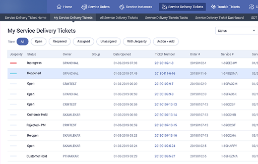
Contextual research across Mumbai, Manila, and Denver
My most extensive research engagement. Across the three operations centres in Mumbai, Manila, and Denver we ran 100+ interviews and structured shift-observation sessions remotely from Pune — capturing how engineers triaged tickets in real operating conditions rather than in scheduled interview slots.
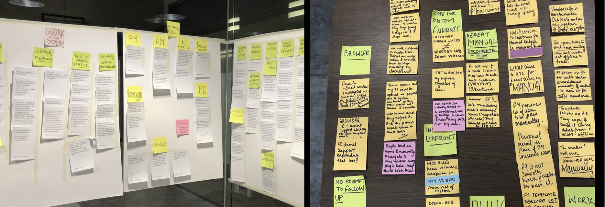
Synthesis · prioritising what to design
An inclusive exercise that gauges stakeholder opinion on identified findings — running the prioritisation as a vote rather than a designer's call.
- Identify stakeholders across the operating regions
- Brief them on the findings surfaced from research
- Have each stakeholder vote on every finding
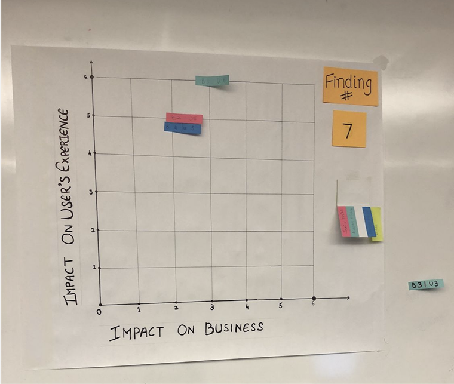
467,000 tickets — and the process map that handed them off
Two further research outputs anchored the redesign: the volume picture (which categories actually ran the system) and the service-delivery map (where context was lost between teams).
The headline finding: engineers were not the problem. They had no orchestration tools, and the system gave them no way to prioritise across 467,000 tickets a year.
From rough sketches to Axure prototypes
The redesign moved from low-fidelity sketches to higher-fidelity Axure prototypes — testing structure and information hierarchy before any visual design.
Strategic moves the research surfaced
The contextual research across three operations centres pointed at three priorities the legacy platform never addressed. The wireframes that follow lock these in before any visual layer:
Engineers should triage from one surface, sortable across every dimension that matters — type, age, customer, status, jeopardy.
The detail view should carry the full audit trail in-line, so engineers don't lose context jumping between portals.
Shift leads need a single view of what's open, who's available, and where load is concentrated — across Mumbai, Manila, and Denver.
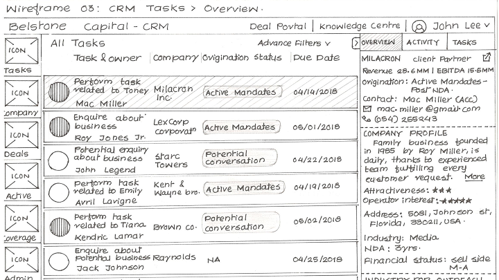
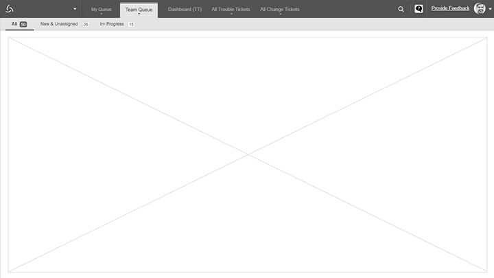
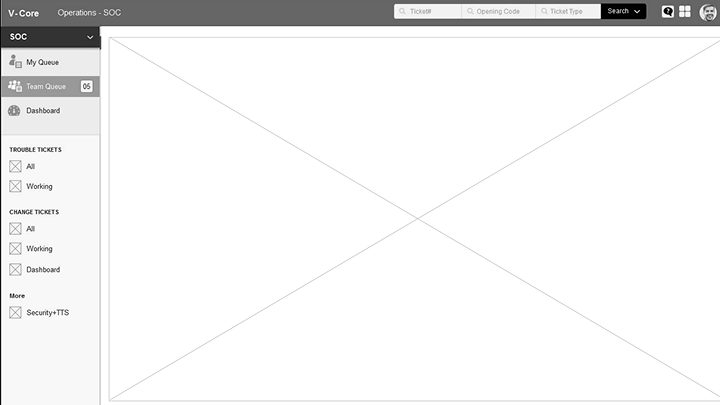
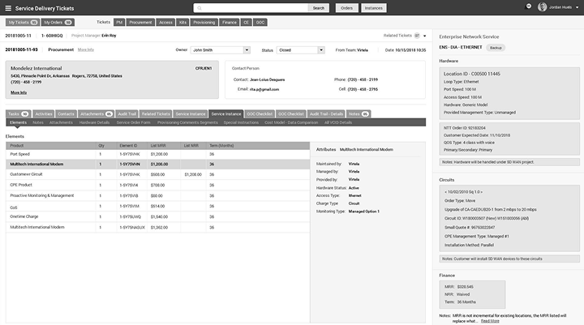
Orchestration through visual hierarchy and contextual data
Three interlocking surfaces — a centralised queue with priority intelligence, a contextual detail view with full ticket history, and a Shift Help dashboard for real-time orchestration. Together they replaced the scattering across portals that the legacy system forced.
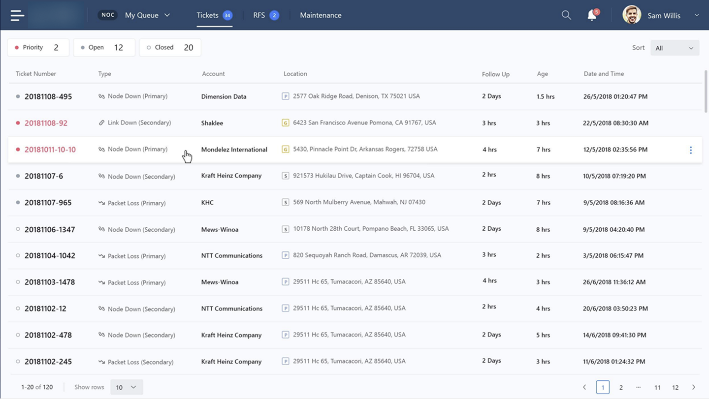
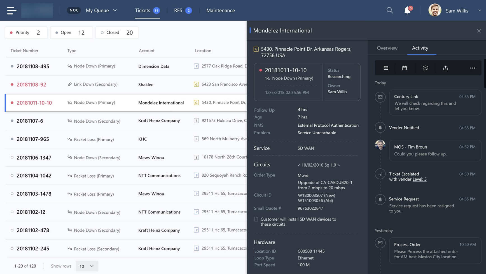
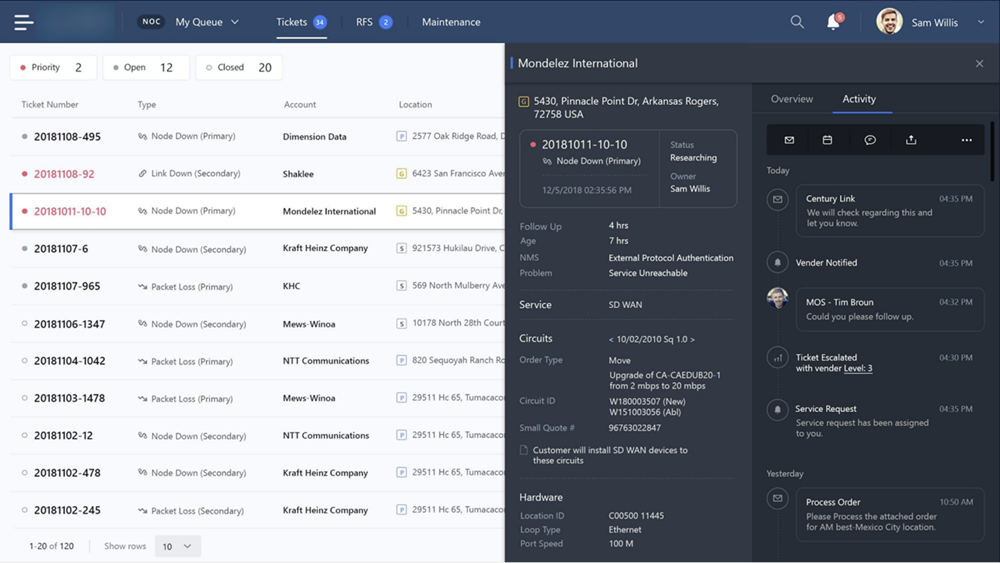
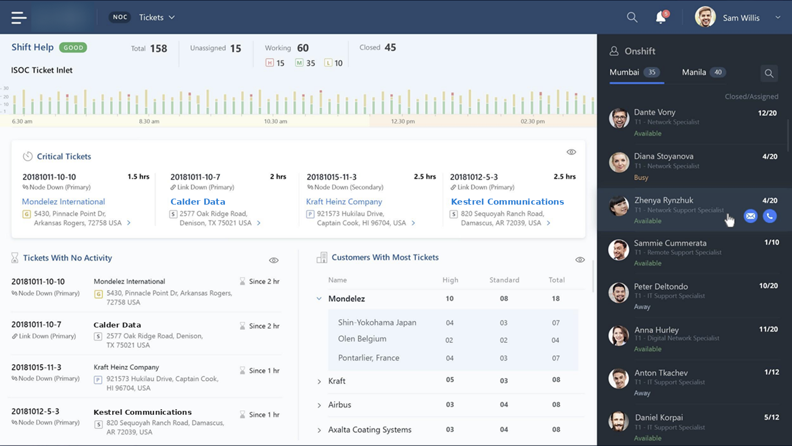
What the redesign delivered
The redesign was validated with five-person usability sessions on the new prototype against the legacy platform. Standardised System Usability Scale (SUS) testing and per-task instrumentation captured the lift.
Key outcome: Task-completion rate lifted across every measured scenario in the new prototype, with most tasks reaching the upper end of the chart (n=5; pre/post legacy vs new prototype).
Key outcome: Substantial drop in clicks across the tasks where the legacy system asked for the most.
- Service-delivery workflow automated end to endInformation that used to be scattered across portals now flows in-product.
- Time and effort to traverse and track orders reducedSortable queue and contextual detail removed the multi-portal lookup pattern.
- Documentation surfaced in contextOrder documentation appears alongside the ticket rather than via separate searches.
- Research scale100+ interviews across three operations centres in three countries informed the redesign.
Rebuilding a CRM around banker workflows, not the org chart
A top-tier US national bank's CRM had grown into a complex three-column interface with deeply nested navigation. Bankers managed pipelines, deal tracking, customer profiles, and tasks from the same surface — but the information architecture reflected internal departments, not the work bankers actually did.
Every new feature meant custom development. The brief was structural: redesign around banker workflows, then rebuild on a foundation that could carry future change without re-coding it from scratch.
The banker workflows the redesign had to unify — drawn before screens, to pin down the actual surface area before any IA decisions.
Mapping the journey before redesigning the screens
The redesign needed structural change, not a screen-level refresh — and that meant we had to earn stakeholder buy-in for that scope before any visual design started.
Four moves that earned stakeholder buy-in for structural change
With relationship managers, branch staff, and back-office teams. The bank had existing personas; many were out of date or missing entirely.
For client onboarding, deal management, and dispute resolution. These sessions surfaced redundancies the bank had not noticed — tasks duplicated across teams, handoffs that broke context.
Navigation was restructured around banker tasks rather than departments, validated through mid-fidelity layouts before any visual design. I designed the wireframes and built them out for stakeholder review.
Pipeline view density, task list patterns, side panel behaviour — to resolve disagreements with data rather than opinion.
The library wasn't a side deliverable; it was the project's real payoff. Subsequent CRM features got assembled from existing blocks rather than custom-coded — which is where the compounding effect on velocity came from.
Unified pipeline, contextual detail, analytics on the same surface
Three views of one surface, built from the same component library. Pipeline is the primary canvas; the side panel and analytics are different cuts of the same data, never the analyst leaving the pipeline view to access either.
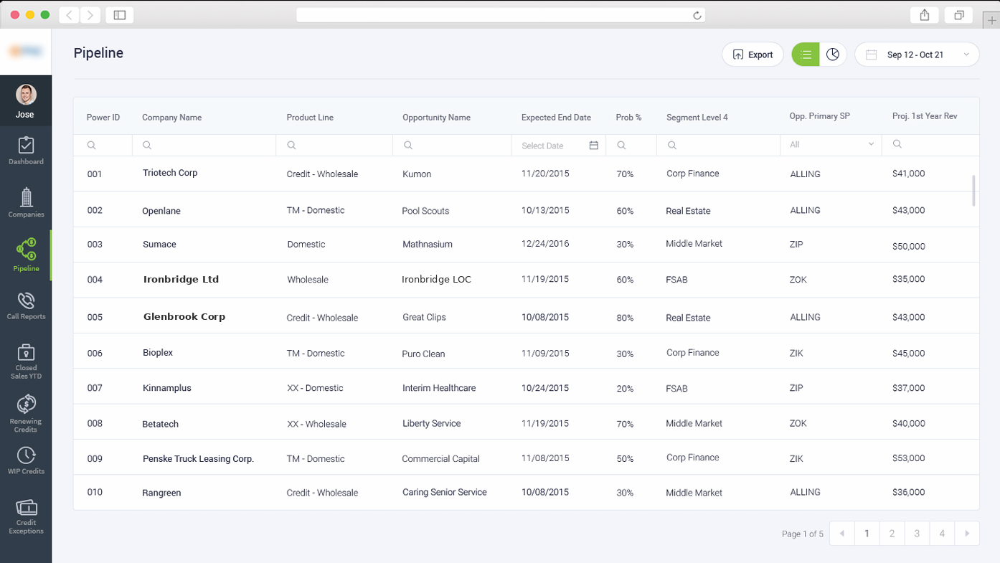
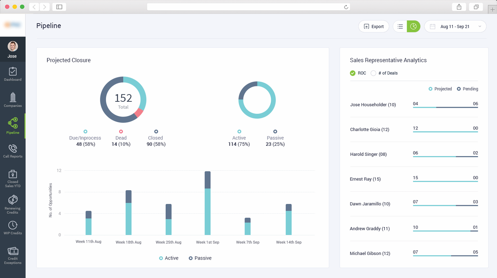
Savings that came from the system, not the redesign
The savings were durable because they came from the system, not from the redesign. Built in Axure with shared Photoshop assets and handed to engineering as a single source of truth, the component library carried every subsequent module — pipeline, side panel, analytics, and detail views all assembled from the same parts.
What the system carried forward
Subsequent CRM modules shipped from the existing component library rather than being custom-built each time, compressing the development cycle for adjacent banker tools.
Patterns repeated across surfaces meant new joiners ramped up against shared mental models — side panels, status badges, and pipeline grammar behaved the same whether they were on contacts, deals, or call reports.
Components handed to development with documented states reduced ambiguity in implementation, shortened QA cycles, and gave engineering a single source of truth instead of per-feature interpretation.
The component library outlived the original engagement and became the bank's house pattern for adjacent CRM workflows — the same vocabulary now serves dispute, credit, and deal-management surfaces.
What this taught me: the savings here weren't a redesign metric — they were a systems metric. The redesign shipped once; the components went on shipping for years. I've treated design systems as the spine of the work ever since, not as something polished on top of it.
Fixing a clinical inventory system that 78% of staff had stopped using
A multi-hospital healthcare network had invested in a clinical inventory management system to track medical supplies across stores, pharmacies, and operating theatres. Only 22% of staff actually used it. The remaining 78% maintained shadow Excel spreadsheets because the official system was too slow and confusing for daily work.
The hidden cost was operational. Shadow systems meant stockouts, OT supplies running low without anyone noticing, pharmacy inventory miscounts, and inadequate audit trails. An unused system in clinical operations is a safety problem, not a usability one.
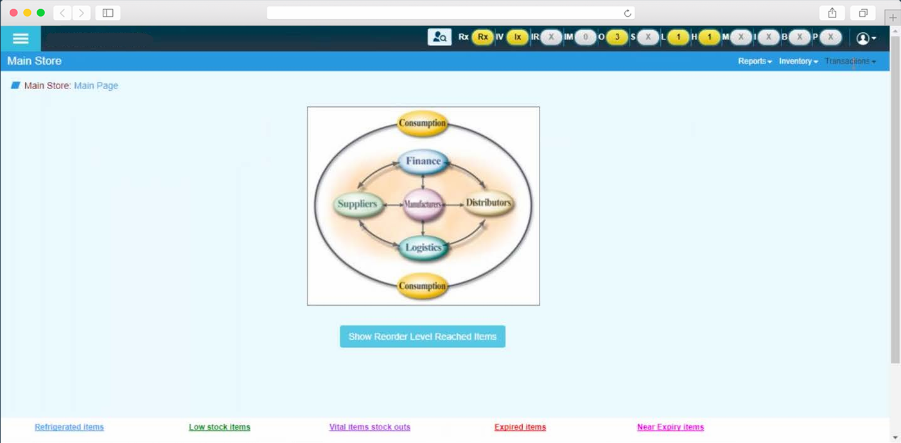
One system, three distinct user groups
The critical insight was that this was not one user group but three — store managers, pharmacy managers, and OT managers — each with distinct daily priorities, risk profiles, and workflow patterns.
Role-permission matrix
| Module | Store Manager | Pharmacy Manager | OT Manager |
|---|---|---|---|
| Stock Management | Full Access | View Only | View Only |
| Pharmacy Dispensing | — | Full Access | — |
| OT Supplies & Procedures | — | — | Full Access |
| Critical Alerts | Stock Alerts | Drug Interactions | Procedure Alerts |
| Reporting & Analytics | Full Access | Department Only | Department Only |
Use cases per stakeholder — IA breakdown
- Receive deliveries & reconcile against POs
- Track stock levels across categories
- Approve inter-department transfers
- Run audit reports & reorder forecasts
- Manage refrigerated & controlled item rules
- Dispense medication to wards & clinics
- Track drug-interaction alerts
- Manage controlled-substance ledgers
- Run dispensing & pharmacy reports
- Reconcile pharmacy stock against orders
- Procedure preparation & kit assembly
- OT-specific supplies stock tracking
- Procedure-led alerts (sterile, expiry)
- Department-level audit & usage reports
- Surgeon-preference card management
Redesigned around the views that actually matter
The redesigned Main Store collapses the legacy diagram into clear navigation by role, with tabs for the views warehouse staff actually need (Refrigerated, Low Stock, Vital, Expired, New Expiry) and a dense filterable table for power users.
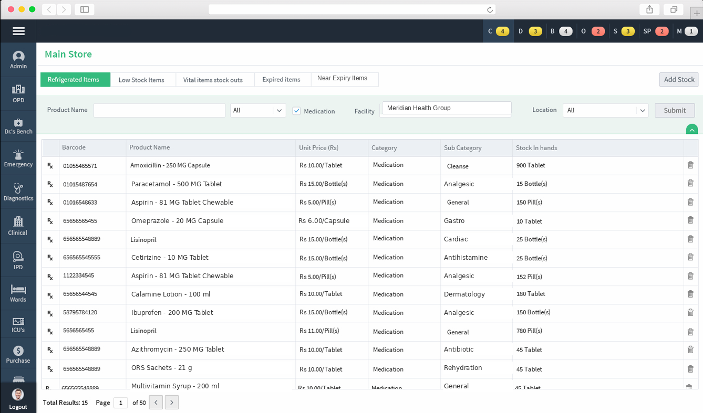
Validated with stakeholders across stores, pharmacy and OT before any launch — wireframe SUS sat at 49 against the legacy system; the redesigned prototype lifted that to 72 in the same testing protocol. Adoption was tracked post-launch across the hospital network.
What the 78% told me: The redesign moved when we stopped designing for "the inventory user" and started designing for the store manager, the pharmacy manager and the OT manager separately. SUS followed adoption, not the other way around.
Replacing an 8-page legacy quote form with a 3-step cloud workflow
The cloud communications provider's quoting tool was a single eight-page form. Sales agents scrolled through every service category — Voice Connectivity, Data, Business Continuity, Wireless — even when quoting one product. Validation was minimal, the layout pre-dated responsive design, and new agents took weeks to ramp. Time-to-quote blocked the cloud-native rebuild the business had committed to.
How do we enhance a multi-step quote creation while migrating legacy to cloud?
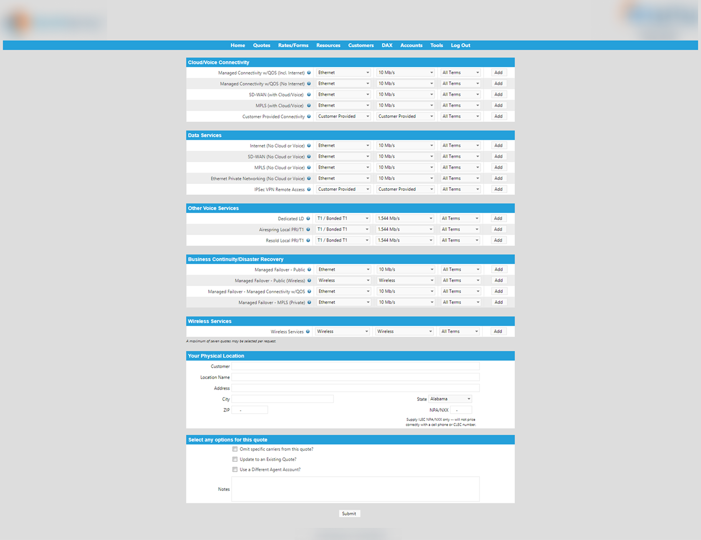
Complex multi-step process
Quote creation involved navigating 8+ pages with numerous selections — fatigue, unclear navigation, redundant data entry across sections.
Inefficient legacy interface
The old system pre-dated modern UX patterns. UI inconsistencies made the process error-prone and pushed users into high support dependency.
Migration to cloud
Transitioning to a cloud-native platform required feature parity with the legacy tool while improving usability — familiar, but enhanced.
Scalability & performance
The new platform had to handle large datasets efficiently and stay responsive across the devices sales agents actually used in the field.
Mapping the workflows before redesigning the screens
The redesign needed to be grounded in how sales agents actually moved through the existing tool — what they navigated, where they stalled, what they ignored. The research and process work happened in five stages.
Sat with sales agents while they created real customer quotes — capturing the friction points actually hit, not the friction points remembered. Surveys and structured interviews ran in parallel to triangulate findings.
Benchmarked competing quote-creation platforms in the sector. Identified modern UX patterns the legacy tool had missed and the table-stakes interactions sales agents would expect post-migration.
Analysed the existing portal navigation and site menu, then rewired a new IA based on findings and stakeholder workshops. Every screen mapped to function and content rules — the artefact shown below became the source of truth for the build team.
Sketched the 3-step structure on paper before opening Axure — pencil forced focus on flow logic before styling. Then promoted the validated structure into clickable interactive prototypes for stakeholder review and testing.
Two pre-launch tracks against representative agents:
- A/B testing — two quote-flow variations measured for task completion time and error rate; progress indicators tested as single-page vs. multi-page; form-field grouping varied between cells.
- Remote usability — moderated sessions with sales-agent teams; observed navigation patterns, hesitation points and confusion areas; session recordings + quantitative feedback drove iteration.
Every page · every function · before any pixel
From paper sketch to cloud-native build
The 3-step structure was validated in pencil before any pixel. Pairing the wireframe against the cloud-native build is the clearest reading of how research and structural decisions translated to the delivered product.
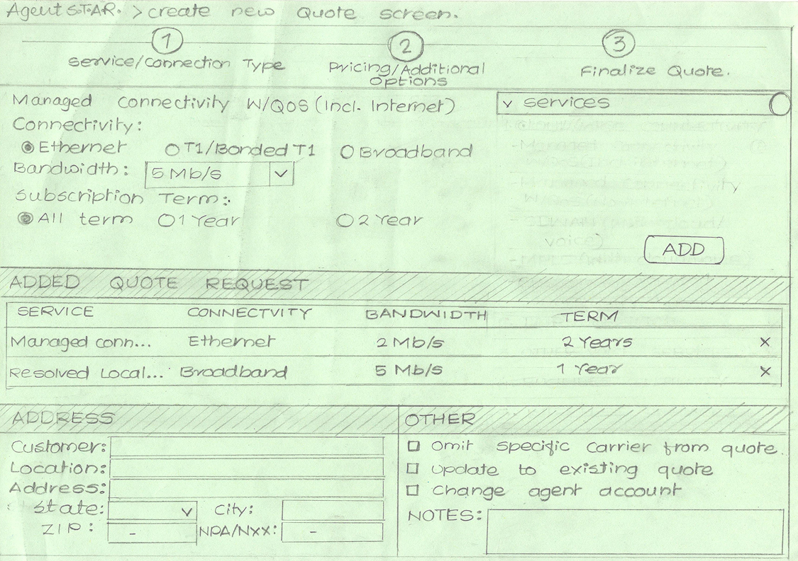
Three sequenced steps. Left-rail categories surface contextually, validation surfaces inline, modern UX patterns replace the pre-responsive layout — but the structural spine is the same three decisions the wireframe locked in.
Click-time down, SUS up — what the move to three steps delivered
The redesign was validated in pre/post sessions: six representative sales agents working real quote tasks against both the legacy tool and the new prototype. Standardised SUS testing and per-task instrumentation captured the lift across both quantitative and qualitative dimensions.
Outcome
Clicks and time across five representative quote tasks
Beyond the headline lift, every one of the five representative tasks dropped in both clicks and time. The pattern held strongest for mid-flow tasks (T2–T4) where the legacy tool forced page-jumps for sub-selections that the new flow handled inline.
Clicks for task completion
Time for task completion (seconds)
Per-dimension SUS gains — synthesising the per-task data
Where the lift came from matters more than the headline 49 → 72 score. The four dimensions below moved most, all symptoms of the same root cause: replacing eight pages of recall with three sequenced steps.
What users said held up after launch
Eight pages collapsed into three. Sales agents stopped scrolling for service categories they never quoted. The recall load that ramping new joiners had been struggling with disappeared with it.
Inline validation replaced trial and error. Errors that the legacy form only surfaced on submit now showed at the field. Quotes that used to bounce back from finance for missing data went through first time more often.
Mobile-responsive replaced desktop-only. Agents quoting from a customer site no longer needed to be back at a desk. The pre-responsive legacy layout had forced field visits to end before quote generation could start.
Familiar from day one. Sales agents recognised the patterns from consumer cloud tools they already used. Internal training time on the new platform dropped against the legacy ramp.
The four dimensions that moved most were learnability and consistency — symptoms of the same root cause. Agents had been holding the location of every service category in memory because the form gave them no other way to find it. Three sequenced steps removed that load, and the SUS score moved with it.
Restructuring receiving across a four-surface serialisation domain
The serialisation engagement spanned four product surfaces handling millions of daily transactions globally — the desktop receiving redesign was the most visible deliverable. The work spanned two successive platform rebuilds: a low-code Gen-1 platform that replaced a legacy serialisation cloud, and a no-code Gen-2 platform that followed.
I led a 3-designer Koru team across four product surfaces in this domain, concurrent with a separate no-code configurator engagement on the same client account. The early phase covered application discovery, workflow analysis, state-machine modelling, and structural design; the team carried each surface to production afterwards.
Four surfaces designed across the engagement
The legacy state — dense, dated, every column laid out at once
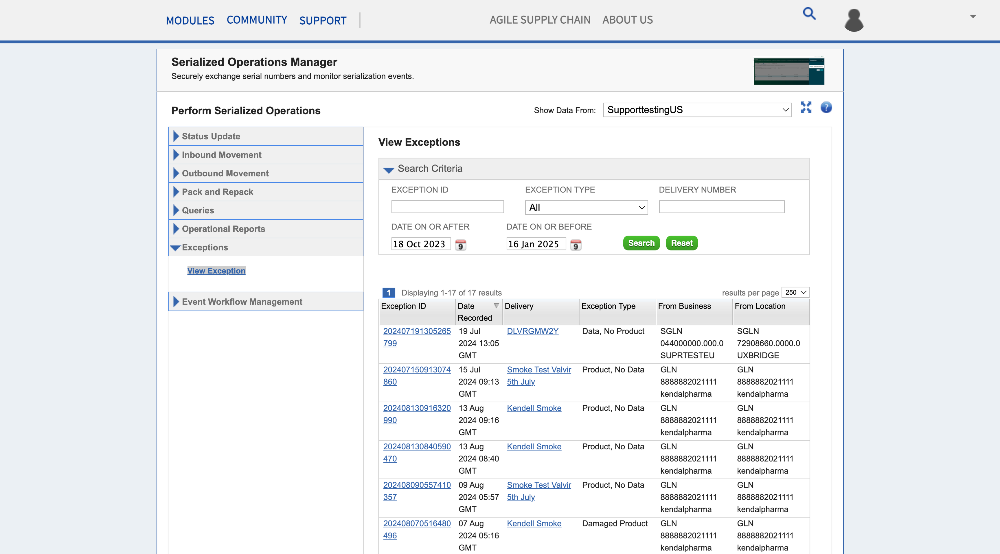
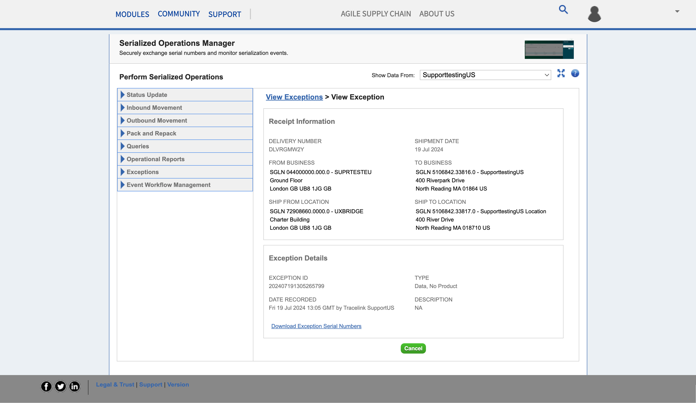
Process, workflow, and the state machine that aligned three teams
Across the four product surfaces of the engagement, my Koru team mapped workflow and state logic end to end before any screen was finalised — so engineering, QA and customer-facing copy could all reference the same artefacts.
The process we followed
interviews
gathering
personas
user journeys
frequently
enhancements
designs
frequently
— phased post-rotation
Stages 1–7 covered my early-phase contribution. The team continued stages 8–10 to take the work through user testing and handoff after my rotation.
Workflow comparison — ideal vs. existing vs. discovered
Receipt voiding — the state machine
The restructured receiving — search, status, and a clear stepper
The redesigned receiving flow was the most visible artefact of the engagement. The dense legacy state shown on the opener was restructured into a clearer in-progress stepper with the exception flow pulled into the receipt detail itself.
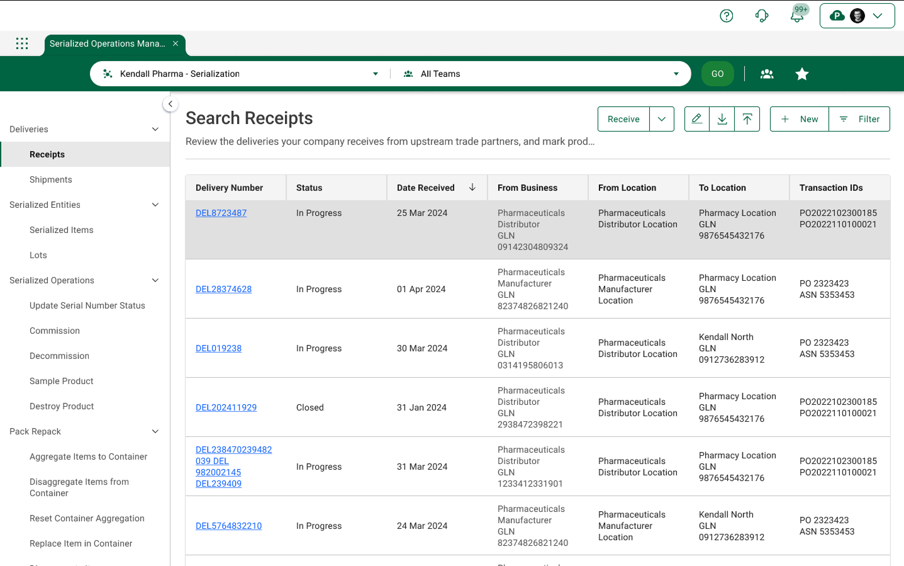
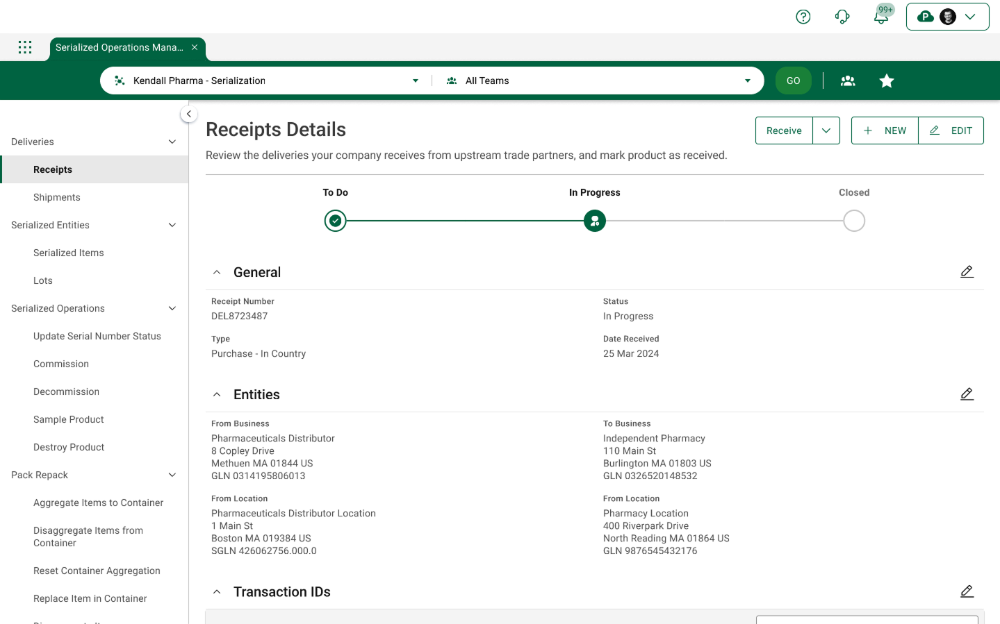
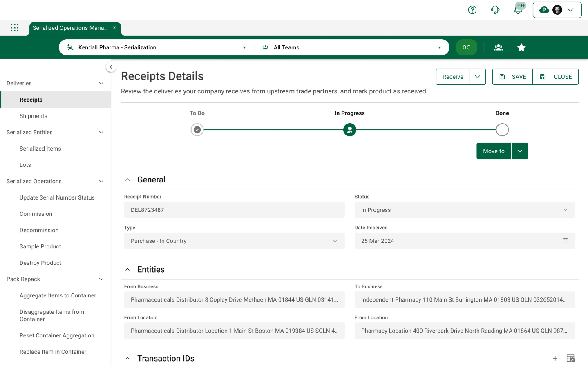
What carried through after the rotation
The state machine and the workflow comparison weren't deliverables in any spec — they emerged from the early-phase design work and outlasted my involvement on the engagement. Both became reference points for engineering, QA and customer-facing teams long after the team rotated past the original scope.
My early-phase contribution covered design across all four surfaces, concurrent with a separate no-code configurator engagement on the same account. The state machine and the workflow comparison were not in any spec — both came out of trying to make the receipt vocabulary consistent across teams, and both kept getting referenced after I rotated off.
Founding designer for a regulated EdTech platform — and the pivot from consulting to SaaS
9ine's consultants worked with each school 1:1, mostly out of Excel. The brief I came in on was strategic: build a platform the consultants could deploy to schools, so 9ine could grow without proportionally hiring more consultants.
I joined without GDPR knowledge. The first six weeks were learning the regulatory domain — UK Data Protection Act, GDPR, RoPA, DPIAs, third-party vendor risk — alongside studying how the consultants actually worked with schools. Only after that did design start. What followed: a design system from blank page; eight platform modules; a four-tier permission architecture; in-app training for users learning compliance work for the first time; and a subscription model where every module could be turned on per school.
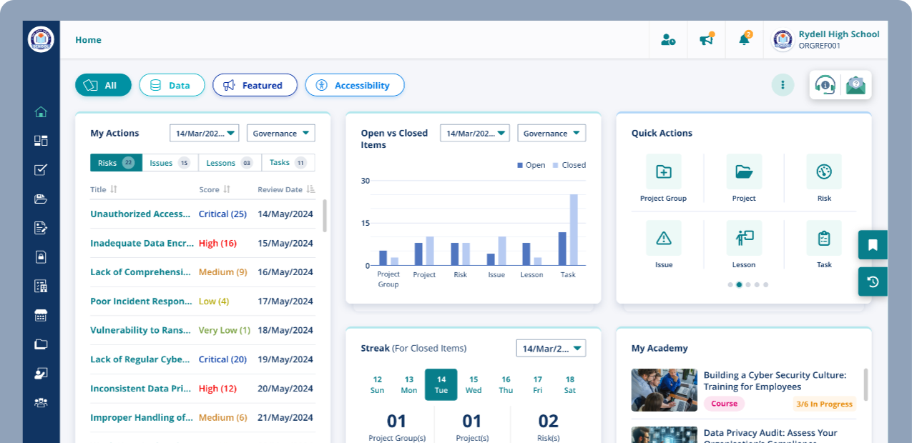
Eight modules, one design system, four user tiers
The platform had to handle three concurrent design problems: real GDPR/cybersecurity workflow, a permission model that fit how 9ine actually delivered the service, and a subscription model that let each school enable only the modules they paid for. The design system carried all three.
Modules I designed
Project Groups, Projects, Risks, Issues, Lessons, Tasks. The dashboard surface shown on the previous slide.
RoPAs, DPIAs, vendor assessments, retention policies. Pre-configured templates for school-specific data processing.
GDPR-compliant retention scheduling and destruction logging. Deep-dived on the next slide.
Stakeholder records linking owners, members, and notified users to compliance artefacts across the platform.
Cyber and data-breach incident reporting with documented response trails and regulator notification timelines.
Tasks, checklists, Gantt views. Compliance work treated as project work — same primitives as Governance.
EdTech vendor inventory, application catalogue, contract tracking. The 360-degree EdTech management surface.
In-app training. Compliance-officer onboarding for users learning GDPR work for the first time, surfaced on the Home dashboard.
Four-tier permission architecture
The permission model mirrored how 9ine actually delivered the service: schools subscribed module-by-module; each module was role-gated within the school; and 9ine's own consultants had a top-tier admin role to operate alongside their clients.
Access to specific modules within a single school, scoped to their compliance role (e.g. department lead, data champion).
Manages users, modules, and compliance state for one school. Subscription controls live here.
Multi-school role for MATs and federation networks. Dashboards aggregate across schools in the group.
Top-tier admin assigned to a client. Full access to operate the platform alongside the school during onboarding and ongoing engagement.
The strategic point: the platform wasn't a digital version of consulting — it was the structure that let 9ine grow without proportionally hiring consultants. Each module a school enabled was one more thing the consultant didn't have to do manually in Excel. That's the design problem the permission architecture solved.
Retention Management — daily-use GDPR tooling for Data Protection Officers
Retention is a daily compliance task: every personal-data record in a school has a lawful retention period, after which it must be destroyed and the destruction logged. The legacy approach was Excel files maintained per-school by 9ine's consultants. The platform module let the school's own DPO own the work directly.
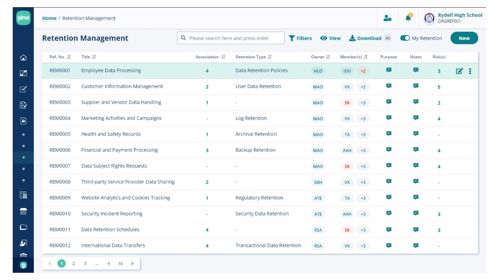
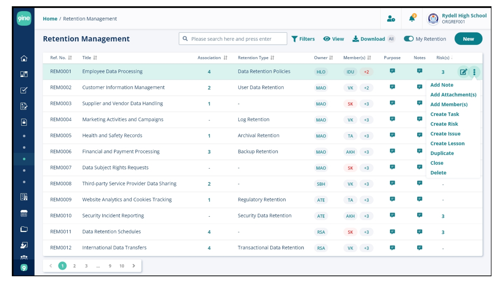
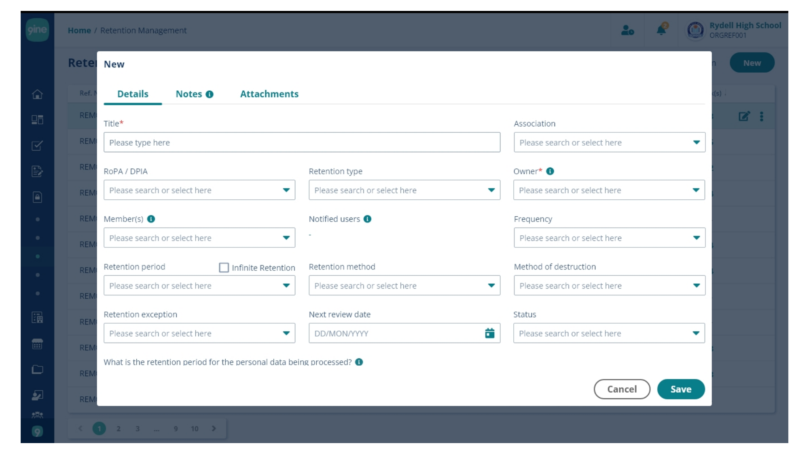
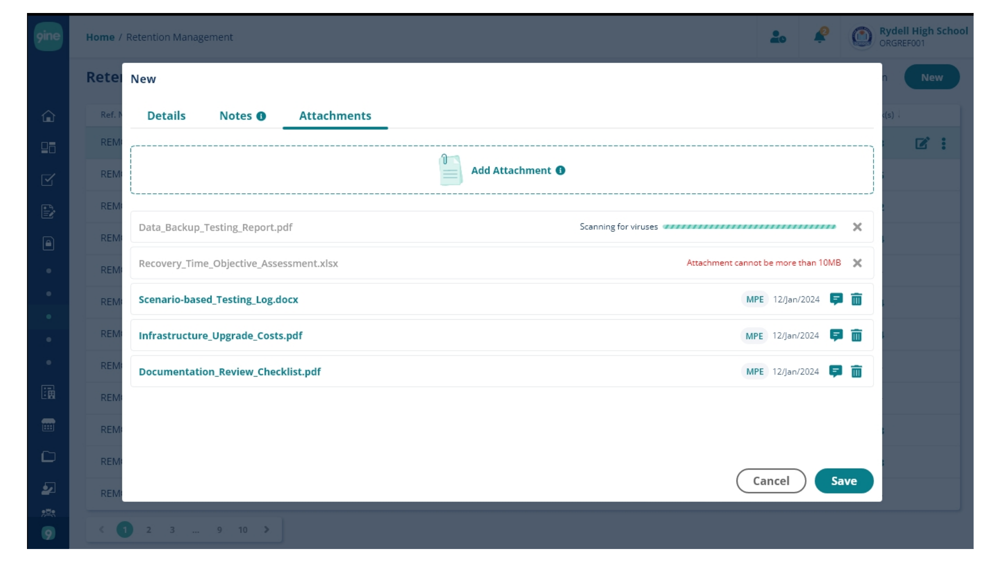
Discovery was lighter than my agency or in-house work. Inputs were DPO interviews, the consultants' existing Excel templates, and direct usage by the founding consultants who became the platform's first internal testers. Designs went through DPO review pre-launch but not the SUS-driven validation cycles I ran on Cases 01-06. The compounding test was deployment — the platform now serves schools globally, and the modules I designed are still the spine of the product (visible on 9ine.com today).
Research, systems, collaboration
Three habits run through everything in this deck. They're also what I'd bring to whatever you put on the table.
Research first
Stakeholder interviews, contextual inquiry, journey mapping, heuristic evaluation come before any pixel. Most of the cases in this portfolio turned on something we found in research, not on a visual decision.
Systems thinking
Component libraries, design tokens, pattern documentation — scalable systems that let teams ship faster while maintaining consistency. The compounding savings on the Banking CRM case weren't a redesign outcome; they were a system outcome.
Cross-functional collaboration
Working closely with product, engineering, QA, and stakeholders to align on what to build and why. The work I'm proudest of always came from a tight loop with engineering and a clear-eyed PM.
Team practice
Built the design function from scratch at 9ine and at Capgemini. Mentored 5 reports at 9ine and 12 at Koru. What I track is whether the practices outlive my involvement — design systems still in use, handoff rituals teams kept after I rotated.
Capabilities
what I bring to the day-to-day work- User research & analysis
- Interaction design
- Wireframing & prototyping
- Usability testing
- Journey mapping & personas
- Design system architecture
- Process streamlining
- Scalable component libraries
- Requirement & scope definition
- Product roadmapping
- Team mentorship & guidance
- Stakeholder management
- Design facilitation & workshops
- Cross-functional collaboration
- Agile & Scrum methodologies
- Figma, Sketch, Adobe XD, Miro
- Jira, GitHub
- HTML, CSS, JavaScript (basic)
- WCAG accessibility standards
- Data visualisation
13+ years across finance, cybersecurity, and healthcare
I've grown by taking on increasingly complex challenges. The agency years built speed and visual fluency. Consulting was where I learned to navigate stakeholder politics and inherited tooling. In-house roles since have been where I've gone deepest — into a single product, a single domain, and the long arc of how it gets built.
-
Mar 2023 — Present
Glasgow, UK · Remote · Wipro permanentCurrent roleLead UX DesignerWiproLeading complete UX redesign of three internal B2B financial applications. Conducting comprehensive user research through stakeholder interviews to identify workflow inefficiencies. Collaborating directly with development teams on pixel-perfect implementation and WCAG 2.1 AA compliance. Acting as primary UX point of contact for project managers and business analysts, turning regulatory and technical requirements into designs analysts can actually work in.
-
May 2020 — Dec 2022
Remote, UK / IndiaLead UX Designer9ine ConsultingFounding designer for the multi-module cybersecurity / data-protection platform deployed across hundreds of schools (UK independents, MATs, US, international, UAE). Built the design system from scratch and shipped eight modules covering DPIAs, retention, incident management, vendor risk, governance, and in-app training. Led a 5-person team — 3 designers, 1 video editor, 1 graphic designer — and established the design-to-development handoff process the team kept after my rotation.
-
Jun 2018 — May 2020
Pune, IndiaUX ConsultantCapgeminiDelivered UX solutions for enterprise-grade software, improving usability of internal and customer-facing tools for a major logistics client. Architected and implemented a new design system from scratch, creating a unified component library that notably cut development time for new features. Facilitated workshops with stakeholders and developers to resolve usability challenges and prioritise features for major product releases.
-
Apr 2014 — May 2018
Pune, IndiaAssociate UX ManagerKoru UXProgressed through four roles over four years — UI Designer / Developer → Senior UI Designer → Lead UI/UX Designer → Associate UX Manager — eventually managing twelve reports (seven designers, five developers) on projects across healthcare, e-commerce, and finance. Managed end-to-end design of a new patient management platform for a healthcare client, successfully rolled out to numerous clinics. Championed adoption of formal usability testing, conducting regular sessions that informed data-driven design improvements.
-
Apr 2012 — Mar 2014
Pune, IndiaGraphic & Web Designer / DeveloperAdvantage AdvertisingStarted my design career as a solo visual generalist working on print collateral, web banners, animation, and photography for advertising clients. Two years of typography, composition, hierarchy, and rapid iteration under client deadlines — craft fundamentals I still draw on.
Thank you.
I'm looking for senior UX work where regulated, high-stakes software is the daily problem — investment banking, capital markets, healthcare, or anywhere expert users live inside complex systems all day.
My experience leans regulated, but I'm not loyal to a sector. Adjacent domains where expert users navigate complex systems interest me equally — energy, defence, insurance, climate tech, regulatory platforms. The skill that matters most is reading systems built around expert users; the sector is secondary.
Senior IC, principal, or Lead — the title matters less than the surface area. If the design problem on your desk sounds like the work in this deck, let's talk.